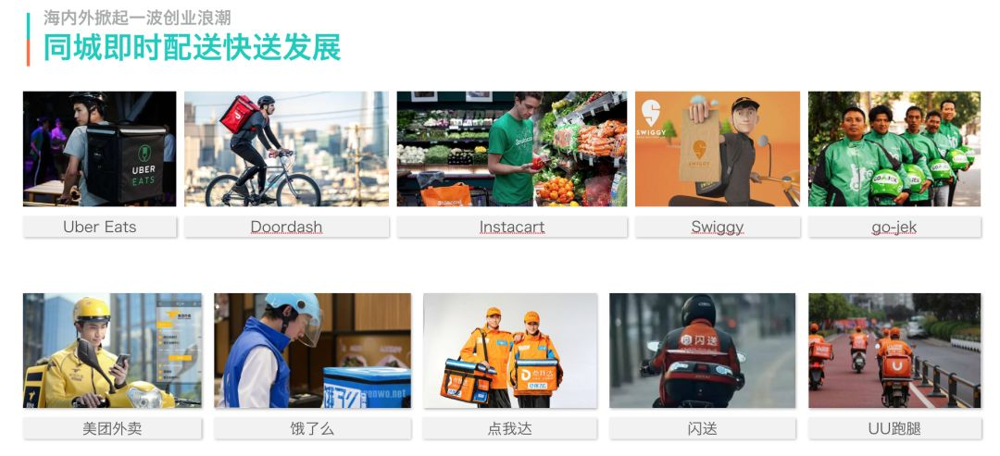

美团配送系统架构演进实践

总第267篇
2018年 第59篇
写在前面
美团配送自成立以来，业务经历了多次跨越式的发展。业务的飞速增长，对系统的整体架构和基础设施提出了越来越高的要求，同时也不断驱动着技术团队深刻理解业务、准确定位领域模型、高效支撑系统扩展。如何在业务高速增长、可用性越来越高的背景下实现系统架构的快速有效升级？如何保证复杂业务下的研发效率与质量？本文将为大家介绍美团配送的一些思考与实践。
配送业务
从物流到同城即时配送
物流行业的发展离不开商业的发展，近些年，商业的变革为物流发展创造了新的机会。电商的兴起有效带动了快递行业的飞速发展，直接造就了顺丰、四通一达这样的快递公司。而近年来O2O商业模式的兴起，尤其是外卖、生鲜等到家场景的发展促进了同城即时配送的快速发展。
与物流领域下的其他分支不同，同城即时配送具有如下特点:
时效快：美团外卖平均送达时间28min。
距离短：配送距离多数为3~5km范围，较大的扩展到同城范围。
随机性强：取货点、交付点具有时间与空间的随机性，预测与规划难度相对较高。

同城即时配送业务的发展契机
行业的流程再造一般离不开两个因素：
内因：技术或基础设施取得重大突破
外因：用户消费升级或市场发生重大变化
技术方面，AI与大数据的应用逐步普及，基于人工智能可以对配送难度、ETA、骑手能力精确评估。GPS的快速发展与GIS厂商能力的不断开放，使得基于LBS的应用大大降低了开发成本。基础设施方面，得益于国家的持续投入，移动网络的质量不断提升，成本逐年下降，也间接促使智能手机几乎实现了全民覆盖。
市场方面，由于中国人口具有超大规模性的特点，人群聚集度高，外卖等到家场景在各大城市尤其是一线城市的需求持续增强。用户对于外卖的安全、时效、配送员的服装、礼貌用语等都有更高的要求。
在这两个因素的共同作用下，促成了同城即时配送行业的发展。而对于同城即时配送业务而言，履约能力与运营效率是研发团队要重点解决的两个问题：
履约能力保证：实现平台对运单调度的实时把控，具备供需调控能力。
运营效率提升：加强对配送骑手的管控能力，提升配送全业务的运营效率，持续降低成本。

技术挑战
美团配送系统的本质——机器与海量骑手协作，服务于全国用户和商家的大规模协作系统。技术的挑战本质上源于业务的痛点，具体体现为线上的强履约能力要求与线下的强运营能力要求。技术上的挑战也同样来源于线上和线下两个方面：
线上履约的SLA要求更高。配送业务需要兼顾用户、商家、骑手三端利益，任何一次宕机的影响都可能是灾难性的。如果体验不好，用户会说，为什么我付了钱，却还饿肚子？商家会说，这是因为出了餐没人取；但是对骑手来说，会觉得自己付出了时间与劳动，却没有获得足够的收益。
线下的业务复杂性更高。多条业务线管理模式不同，对于如何兼顾系统在共性和差异化上有很大挑战。

系统架构演进
美团配送系统架构的演进过程可以分为三个阶段：
MVP阶段：业务模式探索，快速试错，如何具备快速迭代能力。
规模化阶段：业务成指数级增长，如何既保证业务发展，又解决系统可用性、扩展性、研发效率等问题。
精细化阶段：业务模式逐步成熟，运营逐步精细化，如何通过产品技术创新驱动业务发展。
MVP阶段
试错阶段，需要快速探索业务模式到底是不是一个方向，这个阶段不要期望很多事情都想得很清楚，用户和市场会快速反馈结果。所以，对于技术团队而言，这个阶段最主要的能力是快。抢夺市场，唯快不破。
从系统架构角度，MVP阶段只需要做粗粒拆解，我们按照人、财、物三大领域将系统做了初步服务划分，以保证后续的业务领域都可以从这三个主领域中分离、继承。
顺便提一下当时团队的组织形式，研发团队按项目制组织，大家共同维护一套系统。当时团队中无QA岗位，由PM、RD共同保证开发质量，一天发布二十几次是常态。

进入这个阶段，业务和产品已经得到了市场的初步验证，的确找到了正确的方向。同时，业务发展增速也对研发团队的能力提出了更高的要求，因为这个阶段会有大量紧急且重要的事情涌现，且系统可用性、扩展性方面的问题会逐步凸显，如果处理不当，就会导致系统故障频发、研发效率低下等问题，使研发疲于奔命。
这个阶段从架构层面我们重点在思考三个方面的问题：
整体架构应该如何演化？履约系统与运营系统的边界在哪里？
履约系统的可用性如何保证？系统容量如何规划？
运营系统如何解决业务的真正痛点？如何在大量“琐碎需求”下提升研发效率？
解决以上问题的整体思路为化繁为简（理清逻辑关系）、分而治之（专业的人做专业的事）、逐步演进（考虑ROI）。
整体架构设计
在整体架构上，我们将配送系统拆解为履约系统、运营系统和主数据平台。
履约系统（图右上侧）的设计上，首先按照用户侧与骑手侧做了初步划分，这样拆分兼顾了双端角色和调度流程的统一。例如：用户侧更关注发单的成功率与订单状态的一致性，骑手侧则更关注派单效果、推单成功率等，整体上解耦了发单、支付、调度等模块。
运营系统（图左上侧）方面，需求长期多而杂，架构设计上需要先想清楚配送的运营系统应该管什么、不应该管什么。在长期的项目开发中，我们从业务战略与组织架构出发，在明确业务战略目标和阶段策略下，梳理每个业务团队/岗位的核心职责、考核目标、组织之间的协作流程，最终整理出现阶段配送运营管理的中心为四个领域：
经营规划：如何科学地定义目标，并保证目标能够有效达成。
业务管理：如何提升每一个业务管理过程的效率与质量。
骑手运营：骑手是核心资源，一个城市需要多少骑手、骑手分级是否科学、如何调控需要系统性方案。
结算平台：提高钱的效能，是能否做到成本领先的关键。如何把钱用得对、用得准需要长期思考。

除了履约、运营两个系统的架构设计外，架构设计层面还有一个非常关键的问题，即履约、运营系统的边界与职责如何划分的问题。个人理解这个问题可能是O2O类业务在规模化阶段最关键的架构设计问题，如果不能有效解决将为系统的可用性、扩展性埋下巨大隐患。履约、运营两个方向的业务需求和技术职责有较大差异，且多数数据的生产都在运营系统，最核心最关键的应用在履约系统。虽然各自的领域职责是清晰的，但对于具体的需求边界上不见得简单明了。对此，我们借鉴了MDM思路，提出了主数据平台（图下侧）的概念，重点解决履约系统与运营系统的合作与边界问题。
主数据平台
主数据是企业信息系统中最基础的业务单位数据，对于配送而言是组织、岗位、人员、商家、用户、城市等数据。与之对应的是业务数据，例如：订单、考勤、薪资等。主数据有两个最关键的特征：
基础性：业务数据生长在主数据的维度上，例如：订单数据是用户、商家两个主数据实体下的交易数据
共享性：各类系统都强依赖于主数据，主数据的变化上游各业务系统需要感知与联动
主数据管理并非一蹴而就，是伴随业务发展逐步迭代的。早期系统较简单，上游系统直接从DB中读取数据并应用。这种方案在系统逐步复杂之后，容易出现多个团队开发互相影响，不利于系统扩展，并且在可用性上有很大风险。为此我们专门成立的主数据的团队，独立拆分了主数据服务，并把所有对于数据的访问收回到服务上。在此基础上，经过不断的迭代和演进，最终我们吸收了CQRS（Command Query Responsibility Segregation）和MDM（Master Data Management）的思想，将整个主数据平台逐步划分成四个部分：
生产系统：负责对数据生产的建模，隔离数据生产对核心模型的影响。例如：骑手入职、组织拆分流程等。
核心模型：挖掘数据实体关系，提升模型能力。例如：一人多岗、双线汇报等。
运力中心：面向履约系统的应用场景支持，将骑手诸多属性抽象为运力模型，并对可用性、吞吐能力着重建设。
管理中心：面向运营系统提供标准化框架，提供信息检索、流程审批、权限控制等场景的统一解决方案。

系统可用性
业务的快速增长对系统的可用性提出越来越高的要求，在方法论层面，我们按照事故发生的时间序列（事前、事中、事后）提出了四大能力建设，即：预防能力、诊断能力、解决能力、规避能力。同时，在具体工作上，我们划分为流程和系统两个方面。
可用性建设是一个长期项目。考虑到ROI，起步阶段重点完成事前的流程建设，即上线规范等一系列线上操作流程，这个工作在早期能够规避80%的线上故障。在流程规范跑通并证实有效之后，再逐步通过系统建设提升人效。

容灾能力
容灾能力建设上，首先思考的问题是系统最大的风险点是什么。从管理的角度来看，职责的“灰色地带”通常是系统质量容易出现风险的地方。因此，早期最先做的容灾处理是核心依赖、第三方依赖的降级，优先保证一旦依赖的服务、中间件出现问题，系统自身具备最基本的降级能力。
第二阶段我们提出了端到端的容灾能力。首先，我们建设了业务大盘，定义了实时监控核心业务指标（单量、在线骑手数等），通过这些指标能够快速判断系统是不是出了问题。其次，我们在核心指标上扩展了关键维度（城市、App版本、运营商等），以快速评估问题有多大影响。最后，我们通过Trace系统，将服务间的调用关系与链路级成功率可视化展现，具备了快速定位问题的根因在哪的能力。
第三阶段，我们期望将容灾预案集成到系统中，基于各类事故场景打造定制化、一体化的容灾工具，这样可以进一步缩短故障的响应、处理时间以及研发学习成本。例如，为了进一步提升配送系统的SLA，我们在端到端的容灾能力上深度优化，重点解决了骑手弱网、无网的情况下的端到端交互问题。中国某些地区人群非常密集但移动运营商网络质量较差，会导致骑手到了这个区域后操作App延迟较大甚至无法操作，这对骑手的正常工作有非常大的影响。因此，我们在移动网络链路层面不断加强长连接、多路互备的能力，并将网络的诊断、处理、验证工具一体化，使骑手App的端到端到达率有了进一步的提升。

系统容量
对于一个规模快速增长的业务，系统的容量规划是一个长期命题。容量规划的关键点是评估与扩容。
评估方面，在业务发展早期我们一个架构师就能够完全掌控整个系统，采用静态评估的方式基本可以衡量系统容量。随着系统复杂度逐渐提升，我们逐步引入了Trace、中间件容量监控等工具辅助评估容量，由架构师团队定义容量评估主框架，由各团队细化评估每个子系统的容量。当业务已经变得非常复杂时，没有任何一个人或团队能够保证精确完成容量评估，这时我们启动了场景压测、引流压测、全链路压测等项目，通过 流量标记 + 影子表 + 流量偏移 + 场景回放 等手段，实现了通过线上流量按比例回放压测的能力，通过系统报告精确评估容量与瓶颈点。
扩容方面，我们分阶段依次实施了冗余备份（主从分离）、垂直拆分（拆分核心属性与非核心属性）、水平拆分（分库分表）、自动归档。

运营系统迭代效率
运营系统涉及一个业务运营管理的方方面面，我们在业务领域上除了明确目标、过程、运力、资金四个领域外，打造了一套运营系统集成解决方案集合。研发通过持续投入精力在平台化服务或组件的长期建设上，使每个垂直的运营系统扩展性得到保证，从而不断提升研发效率。以工作流场景为例，通过动态表单 + 流程平台的方式，统一各类业务流、审批流的工程实现，各类管理动作的效率与质量可量化，找到流程阻塞节点，自动化部分流程环节，通过技术手段不断降低人工成本。

精细化阶段
业务发展不断成熟之后，业务的各类运营管理动作会趋于精细化。这个阶段，业务对于产品技术有更高要求，期望通过产品技术创新不断打造技术壁垒，保持领先优势。配送的业务特点天然对AI应用有很强的需求，大到供给调整，小到资源配置，都是AI发挥效力的主战场。对于工程层面，需要持续思考的问题是如何更好地实现AI的业务应用。为此我们重点提升了几方面的能力：
降低试错成本：构建仿真平台，打造算法的“沙箱环境”，在线下环境快速评估算法效果。
提升算法特征迭代效率：构建特征平台，统一算法策略迭代框架与特征数据生产框架，提升特征数据质量。
提升导航数据质量：持续深耕LBS平台，提升基础数据质量，提供位置、导航、空间的应用能力。

仿真平台
仿真平台的核心是打造“沙箱环境”，配送的服务业属性要求用户、商家、骑手深度参与服务过程，因此算法的线上试错成本极高。对于仿真平台的建设上，我们删减掉调度系统的细枝末节，粗粒度的构建了一套微型调度系统，并通过发单回放、用户、商家、骑手实体建模、骑手行为模拟等方法模拟线上场景。每次仿真会产出算法的KPI报告，实现算法效果的离线预估。

算法数据平台
算法策略的效果，主要依赖于算法模型和特征数据的质量。为此我们围绕模型和特征，打造了一站式算法数据平台，提供从数据清洗、特征提取，模型训练、线上预测到算法效果评估的全方位数据闭环解决方案，为机器学习和深度学习算法模型在配送各个业务线落地提供支撑。

LBS平台
LBS平台早在配送业务的起步阶段就开始实施，随着算法场景的不断发展，LBS不断深化点线面空间能力，为配送调度、时间预估、定价等业务场景提供支撑，打造了任务地图、路径规划、语音导航、热力图等产品。

结语
美团配送系统架构的演进过程，架构师团队长期关注技术驱动业务、明确领域职责与边界等关键问题，同时架构的演进过程也是不断考虑ROI的权衡取舍过程。技术的持续发展不断提升体验、规模，降低运营成本，而架构在里面解决的问题是化繁为简，将复杂问题拆解为简单的问题并通过领域专家逐级各个击破。随着规模的持续增长，业务的持续创新会给系统架构提出越来越高的挑战，系统架构设计将是我们长期研究的一个课题。
作者简介
永俊，美团资深技术专家，配送业务系统团队负责人。长期从事配送系统质量保证、运营体系建设、系统架构升级等方向。
---------- END ----------
招聘信息
本文为美团配送技术团队的集体智慧结晶，感谢团队每一名成员的努力付出。如果你对业务分析、领域模型感兴趣，欢迎联系yinyongjun@meituan.com。
也许你还想看